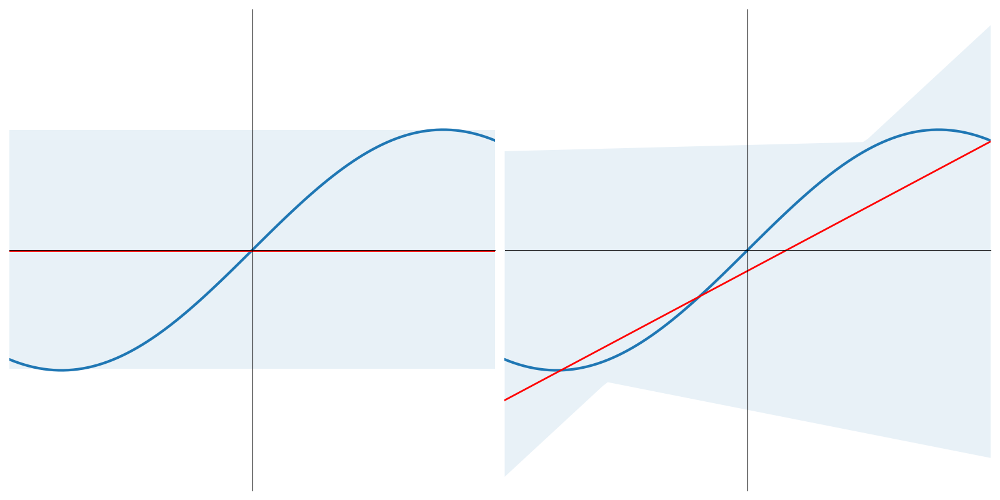
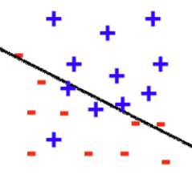

On trouvera ci-dessous une courte présentation de l’approche statistique de l’apprentissage automatique, où l’on introduit notamment les notions importantes de biais et de variance d’un modèle.
Modèle statistique de l’apprentissage#
Soient un phénomène aléatoire décrit par un vecteur aléatoire \(X\) dont les composantes sont supposées indépendantes, et une variable aléatoire \(Y\) (on suppose pour simplifier l’exposé que \(Y\) est une variable, mais le discours s’applique sans perte de généralité s’il s’agit d’un vecteur aléatoire).
On suppose disposer de \(n\) réalisations de \(X\), notées \(\mathbf x_i\) et un ensemble correspondant de réalisations de \(Y\), le tout constituant l’ensemble d’apprentissage \(Z=\left \{(\mathbf x_i,y_i),i\in[\![1,n]\!]\right \}\).
Le plus souvent, la relation entre \(X\) et \(Y\) est inconnue, et on la modélise par un modèle régressif
où \(f\) est une fonction déterministe de \(X\), et \(\epsilon\) est une variable aléatoire représentant l’erreur, i.e. modélisant l’ignorance que nous avons de la dépendance entre \(X\) et \(Y\). On suppose souvent que \(\mathbb{E}(\epsilon)=0\). On a alors les deux propriétés suivantes :
\(\mathbb{E}(\epsilon\mid X)=0\) et ainsi \(f(\mathbf x)=\mathbb{E}(Y\mid X=\mathbf x)\).
\(\mathbb{E}(\epsilon f(X))=0\), et l’erreur est non correlée à la fonction de régression \(f\). Cette propriété, connue sous le nom de principe d’orthogonalité, affirme que toute l’information sur \(Y\) disponible à travers \(X\) a été encodée dans \(f\).
En pratique, \(f\) peut être modélisée par une fonction paramétrique \(f(X)=f(X,\boldsymbol{\theta}),\boldsymbol{\theta}\in \mathbb{R}^p\).
La réponse du modèle à l’entrée \(\mathbf x\) est notée \(O=F(\mathbf x,\boldsymbol{\theta})\). Sur présentation de \(Z\), le vecteur \(\boldsymbol{\theta}\) est obtenu (en supposant une fonction de perte quadratique) par minimisation de la fonction d’erreur
Notons \(\mathbb{E}_Z\) l’opérateur moyenne calculé sur l’ensemble \(Z\) des paires \((\mathbf x,y)\) d’exemples (à la différence de \(\mathbb{E}\) qui agit sur l’ensemble des possibles sur \(X\) et \(Y\)). Puisque l’information sur \(Z\) est codée dans \(\boldsymbol{\theta}\), on peut substituer \(F(\mathbf x,Z)\) à la notation \(F(\mathbf x_i,\boldsymbol{\theta})\) et l’erreur se réécrit alors :
or
et en substituant dans l’erreur et en développant
Or, le dernier terme de cette somme est nul et donc
Le premier terme de cette somme est la variance de l’erreur \(\epsilon\), évaluée sur \(Z\). Elle représente l’erreur intrinsèque, car elle est indépendante du vecteur \(\boldsymbol{\theta}\). Elle peut donc être ignorée dans la minimisation de \(E(\boldsymbol{\theta})\). Une mesure naturelle du pouvoir de prédiction du modèle paramétré par \(\boldsymbol{\theta}\) est donc
Dilemne biais/variance#
Biais et Variance#
Puisque \(f(\mathbf x)=\mathbb{E}(Y\mid X=\mathbf x)\), l’erreur quadratique entre \(f(\mathbf x)\) et \(F(\mathbf x,Z)\) peut s’écrire
ce qui permet d’exprimer cette erreur comme la valeur moyenne sur \(Z\) de l’erreur d’estimation entre \(f(\mathbf x)\) et \(F(\mathbf x,Z)\). On a alors
et l’erreur quadratique s’écrit donc :
avec :
\(B(\boldsymbol{\theta}) = \mathbb{E}_Z\left ( F(\mathbf x,Z)\right )-\mathbb{E}(Y\mid X=\mathbf x)\) le biais de la valeur moyenne de \(F(\mathbf x,Z)\), mesurée par rapport à \(f(\mathbf x)\). Ce terme représente l’incapacité du modèle à approximer la fonction de regression \(f\). La classe de fonctions choisie limite en effet la précision avec laquelle on peut approcher \(f\). C’est donc une erreur d’approximation. En général, son estimation, cruciale, est difficile à réaliser car elle requiert une connaissance des propriétés de \(f\) (régularité,…), qui sont justement inconnues.
\(V(\boldsymbol{\theta})= \mathbb{E}_Z\left ( \left ( F(\mathbf x,Z)- \mathbb{E}_Z\left (F(\mathbf x,Z)\right ) \right )^2\right )\) la variance de la fonction \(F(\mathbf x,Z)\) mesurée sur \(Z\). Ce terme représente l’insuffisance de l’information portée dans \(Z\) pour l’approximation de \(f\). C’est donc une erreur d’estimation. On peut le relier à la façon dont le modèle change sur des ensembles d’apprentissage différents. Il a été montré que les vitesses de convergence de l’erreur d’estimation peuvent être calculées sans connaitre a priori les propriétés de \(f\).

Pour de bonnes performances de la fonction d’approximation \(F(\mathbf x,\boldsymbol{\theta})\), \(B(\boldsymbol{\theta})\) et \(V(\boldsymbol{\theta})\) doivent simultanément être petits. Cependant, sur des processus d’apprentissage sur un ensemble \(Z\) de taille \(n\) fixée, le prix à payer pour un biais faible est une grande variance. Ce compromis s’appelle le dilemne biais-variance.
Illustrations#
De l’analyse précédente, on en déduit que plus complexe sera l’espace des fonctions \(\mathcal{F}\), meilleure sera la chance d’approcher \(f\), et que plus petit cet espace sera, meilleure sera la chance que l’algorithme généralise bien.
Supposons \(f(x) = sin(x),x\in[-\pi,\pi]\) et que l’ensemble d’apprentissage \(Z\) soit constitué de deux points tirés au hasard sur cette courbe. Supposons de plus que \(\mathcal{F}\) soit composé des fonctions constantes et des polynomes de degré 1.
On apprend sur \(N\) ensembles d’apprentissage \(Z_i\) \(N\) modèles constants et \(N\) modèles linéaires \(F^{Z_i}(x,w)\), pour reprendre les notations précédentes

Pour un \(x_0\) donné, on obtient \(N\) réalisations \(F^{Z_i}(x_0,w)\) d’une variable aléatoire, dépendant de l’ensemble d’apprentissage (points sur la figure précédente). En moyennant sur les \(N\) modèles, on obtient un modèle constant et un modèle linéaire \(\bar{F}\) moyens

Alors \(\bar{F}(x,\boldsymbol{\theta}) = \mathbb{E}_Z(F^{Z}(x_0,\boldsymbol{\theta}))\approx \frac{1}{N}\displaystyle\sum_{i=1}^N F^{Z_i}(x_0,\boldsymbol{\theta})\)
et \(Var(F)(x,\boldsymbol{\theta}) = \mathbb{E}_Z \left((F^Z(x_0,\boldsymbol{\theta})-\bar {F}(x_0,\boldsymbol{\theta}))^2\right) = \mathbb{E}_Z (F^Z(x_0)^2)-\bar{F}(x_0,\boldsymbol{\theta})^2\)
L’erreur entre la sortie du modèle et la sortie théorique, moyennée sur les points de test (qui mesure donc l’erreur en généralisation) s’écrit donc, comme précédemment :
En reprenant la figure précédente :
pour le modèle constant, \(B\)=0.5, \(V\)=0.25 et \(L_{av}\left (f(x),F(x,\boldsymbol{\theta}) \right )=0.75\)
pour le modèle affine, \(B\)=0.21, \(V\)=1.69 et \(L_{av}\left (f(x),F(x,\boldsymbol{\theta}) \right )=1.90\)
et le « meilleur » modèle (en généralisation) est le modèle constant (soit le « moins compliqué »).
Si l’on étend cette approche à 5 points d’apprentissage, on montre facilement que \(L_{av}\left (f(x),F(x,\boldsymbol{\theta}) \right )\) est égal à 0.6 pour le modèle constant, et 0.42 pour le modèle affine


En illustrant cette fois-ci sur un problème de classification, on pourra penser au biais et à la variance comme sur la figure suivante.
